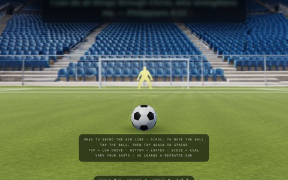
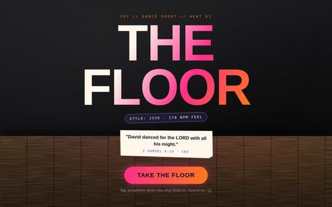
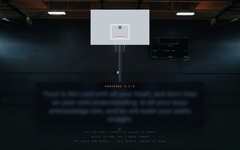

Game
Ideas
Some games based on specific sports that could link to a testimony page or be standalone. Ideally these could be shareable to draw others to want to download the Youth Sport Bible app.
Start with these two

Verse Strike
An idea that might link a game to a Soccer Testimony, with the idea of revealing a Bible verse while playing the game.
18No. 1
An experiment using football as an entry point or metaphor for the Gospel.
19And then the rest

Example 20The Floor — Heat 01: Jive
First stab at a dance game that might link to a testimony. Needs a lot more thought to work with a dancer. More a proof of concept.
20
Example 21Verse Shot
An experiment using a game of digital basketball to reveal a Bible verse. Needs refining but is a very workable idea in any sport.
21